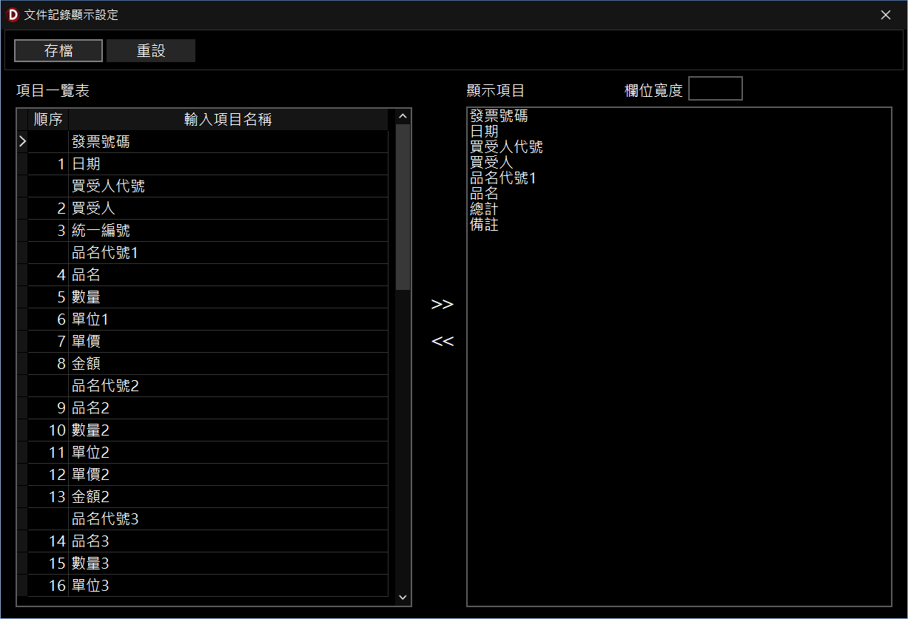

文件紀錄顯示設定
本功能用於設定 InfoRec 軟體（以下簡稱 InfoRec）在查詢或瀏覽歷史紀錄列表時，畫面所要呈現的資料欄位與顯示寬度。
一、 功能介面概述
-
項目一覽表：
- 顯示當前文件所有可供顯示的資料欄位（如發票號碼、日期、買受人等）。
-
顯示項目與欄位寬度：
- 「顯示項目」：此處列出的欄位，才會出現在紀錄查詢的清單畫面上。
- 「欄位寬度」：選取特定的顯示項目後，可在此設定該欄位在畫面上的寬度數值。
二、 基本操作步驟
-
調整顯示欄位：
- 選取左側項目後點擊
>>，即可加入右側的顯示項目清單。
- 選取右側項目後點擊
<<，即可將該項目從顯示清單中移除。
-
設定欄位寬度：
- 在右側「顯示項目」清單中點選欲調整的欄位，並於右上角「欄位寬度」方框內輸入所需的數值。
-
儲存設定：
- 欄位與寬度皆調整完畢後，點擊左上角的「存檔」按鈕即可生效。
三、 尋求協助
- 若有任何操作疑問或欄位顯示異常，請尋求協助以聯繫系統管理人員。

文件紀錄顯示設定視窗